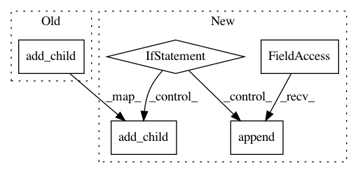

a8eabdad14eee8a47257248fa271700fcce939cb,autokeras/search.py,BayesianSearcher,search,#BayesianSearcher#Any#Any#Any#Any#,159
Before Change
new_model, father_id = self.maximize_acq(model_ids)
history_item = self.add_model(new_model, x_train, y_train, x_test, y_test)
self.search_tree.add_child(father_id, history_item["model_id"])
self.gpr.incremental_fit(Graph(new_model).extract_descriptor(), history_item["accuracy"])
pickle_to_file(self, os.path.join(self.path, "searcher"))
del new_model
backend.clear_session()
After Change
pickle_to_file(self, os.path.join(self.path, "searcher"))
return
if self.init_search_queue:
graph = self.init_search_queue.pop()
model = graph.produce_model()
history_item = self.add_model(model, x_train, y_train, x_test, y_test, constant.SEARCH_MAX_ITER)
self.init_gpr_x.append(graph.extract_descriptor())
self.init_gpr_y.append(history_item["accuracy"])
pickle_to_file(self, os.path.join(self.path, "searcher"))
return
if not self.init_search_queue and not self.gpr.first_fitted:
self.gpr.first_fit(self.init_gpr_x, self.init_gpr_y)
new_model, father_id = self.maximize_acq()
history_item = self.add_model(new_model, x_train, y_train, x_test, y_test, constant.SEARCH_MAX_ITER)
self.search_tree.add_child(father_id, history_item["model_id"])
self.gpr.incremental_fit(Graph(new_model).extract_descriptor(), history_item["accuracy"])
pickle_to_file(self, os.path.join(self.path, "searcher"))
def maximize_acq(self):
In pattern: SUPERPATTERN
Frequency: 3
Non-data size: 5
Instances
Project Name: keras-team/autokeras
Commit Name: a8eabdad14eee8a47257248fa271700fcce939cb
Time: 2018-05-01
Author: jhfjhfj1@gmail.com
File Name: autokeras/search.py
Class Name: BayesianSearcher
Method Name: search
Project Name: tyarkoni/pliers
Commit Name: be209c3d3bb1c096430e09bbd49e1826a5a08285
Time: 2017-01-15
Author: tyarkoni@gmail.com
File Name: pliers/graph.py
Class Name: Graph
Method Name: add_node